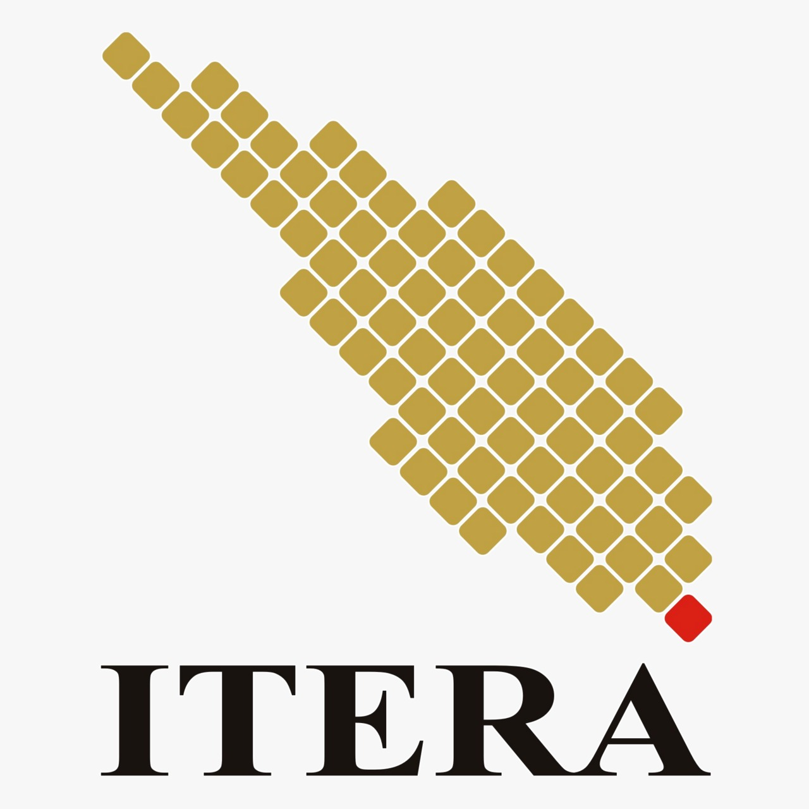

Sejarah Singkat
Institut Teknologi Sumatera (ITERA) merupakan perguruan tinggi negeri baru yang berdiri sejak 6 Oktober 2014 dan berlokasi di Lampung.

Kampus Unggulan di Pulau Sumatera
Institut Teknologi Sumatera (ITERA) merupakan perguruan tinggi negeri baru yang berdiri sejak 6 Oktober 2014 dan berlokasi di Lampung.
Menjadi perguruan tinggi unggul dan mandiri yang memandu perubahan melalui pemberdayaan potensi Sumatera.
Mengembangkan pendidikan, penelitian, dan pengabdian masyarakat untuk memberdayakan potensi wilayah di bidang sains, teknologi, seni, dan ilmu kemanusiaan.
Berikut adalah beberapa fakultas yang ada di ITERA beserta jumlah program studinya.
| No | Nama Fakultas | Jumlah Program Studi |
|---|---|---|
| 1 | Fakultas Teknologi Industri (FTI) | 21 |
| 2 | Fakultas Teknologi Infrastruktur dan Kewilayahan (FTIK) | 11 |
| 3 | Fakultas Sains (FS) | 9 |
Empat mahasiswa Institut Teknologi Sumatera (Itera) meraih empat medali perak dalam Kejuaraan Nasional Kempo pada rangkaian Invitasi Cabang Olahraga Beladiri dan Terukur Mahasiswa Provinsi DKI Jakarta Tahun 2026. Kejuaraan yang diselenggarakan Dinas Pemuda dan Olahraga Provinsi DKI Jakarta itu berlangsung pada 8–10 September 2026 di GOR Matraman, Gelanggang Jakarta Pusat.
Institut Teknologi Sumatera (Itera) resmi memiliki Unit Layanan Disabilitas (ULD) sebagai langkah mewujudkan lingkungan pendidikan tinggi yang inklusif. Peluncuran ULD Itera dilakukan di Aula Gedung Kuliah Umum 2, Kamis, 10 September 2026, yang turut dihadiri Ketua Komisi Disabilitas Nasional Dr. Dante Rigmalia, M.Pd.